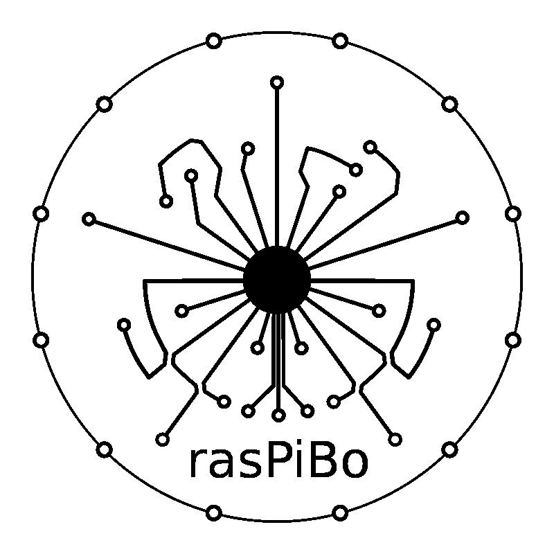
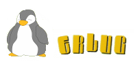
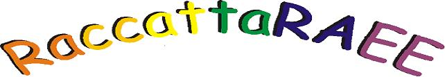
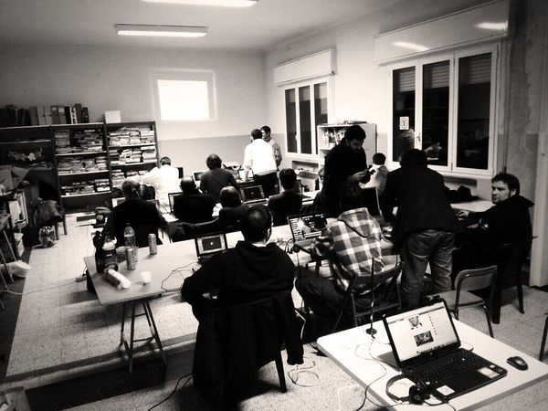

RaspiBO
Un'allegra anarchia creativa
Presentato da Savino thegamer Sasso
LinuxDay 25 ottobre 2014, Bologna
Chi siamo
Ma come, ci avete visti nascere e non vi ricordate di noi?!?!  
Dove ci vediamo
Il makerspace la nostra casa
Quando ci vediamo
- noncorso
- Ogni secondo e quarto martedi' del mese a partire dalle 20:30
- serate per i gruppi
- Ogni martedi e ogni giovedi' a partire dalle 20:30
- presenza in Salaborsa
- Assieme a RaccattaRAEE, ERLUG e CoderDojo stiamo organizzando degli incontri al sabato pomeriggio
Cosa facciamo
Carrellata progetti: WBEN,SONDA RENZO, VGA, ROBOTS,CYCLOSCOPE

Nuovi corsi
L'impegno per il nuovo anno e' aumentare le serate dedicate alla formazione
Mantenendo sempre il nostro stile:
chi ha competenze ed ha voglia di condividerle e' il benvenuto!
A breve ad esempio avvieremo un corso di montaggio da zero di una stampante 3d
E quanto costa?
Niente!
Ma chi lo organizza?
Non ci sono organizzatori e partecipanti: chi viene e vuole contribuire e' il benvenuto
Voglio venire, mi devo iscrivere?
Nessuna iscrizione:
vieni al noncorso!
Mi piace ma le mie competenze informatiche sono basilari
Non ci sono prerequisiti!
Ho un'idea fantastica,
me la sviluppate?
Se oltre all'idea hai entusiasmo e voglia di fare vieni a raccontarla al noncorso, troverai tante persone disposte ad aiutarti
Ma quindi RaspiBO e' un FABLAB?
Un FABLAB e' un luogo dove
- Macchine a controllo numerico vengono messe a disposizione degli utenti
- Persone preparate mettono a disposizione le loro competenze sostanzialmente sotto forma di cosnulenza
Chiamiamo il nostro spazio makerspace proprio per non creare confusione
Keep in touch!
Iscriviti alla newsletter: liste.raspibo.org
Alla stessa pagina trovi le mailing list dedicate ai gruppi di lavoro, sei il benevnuto!
Abbiamo un social network: social.raspibo.org
Tutti i progetti sono documentati su www.raspibo.org
Grazie!
www.raspibo.org || info at raspibo.org
Questa presentazione e' rilasciata con licenza CC-BY-SA
I diritti per le immagini appartengono ai relativi proprietari